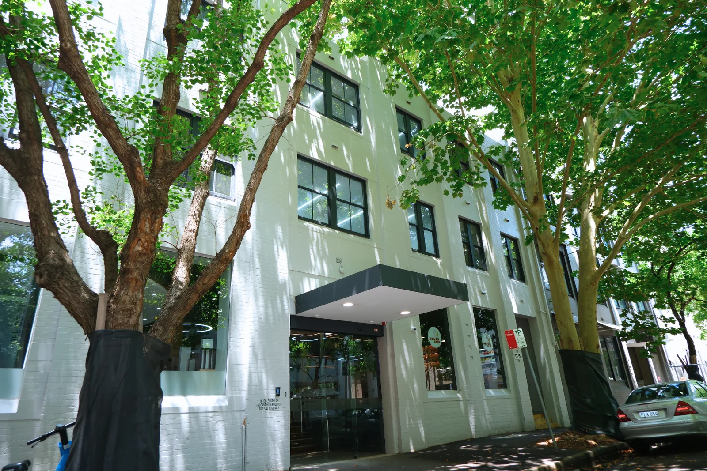
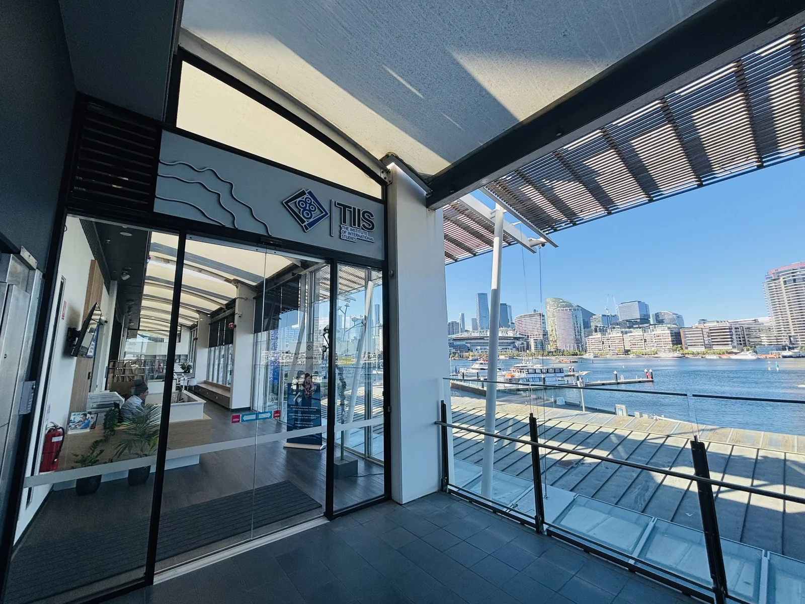

Timeline
A Decade of Growth
2015
TIIS Founded
Founded in Sydney as a private higher education provider.
2017
TEQSA Accreditation
Registered by the Tertiary Education Quality and Standards Agency as provider PRV14085.
2018
Professional Accounting Recognised
Master of Professional Accounting earned accreditation from CPA Australia, CAANZ, and ACCA.
2022
Business Programs Launched
Introduced the Bachelor of Business (June) and Master of Business Administration (September).
2023
Bachelor of IT Introduced
Launched the Bachelor of Information Technology (CRICOS 113724B).
2024
Cyber Security & Financial Planning
Approved to offer Master of Cyber Security, Graduate Certificate in IT, and Graduate Diploma of Financial Planning — our first domestic and online offering.

